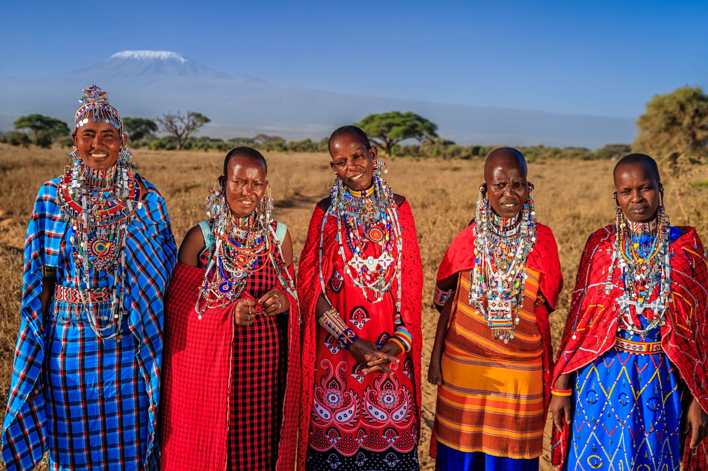
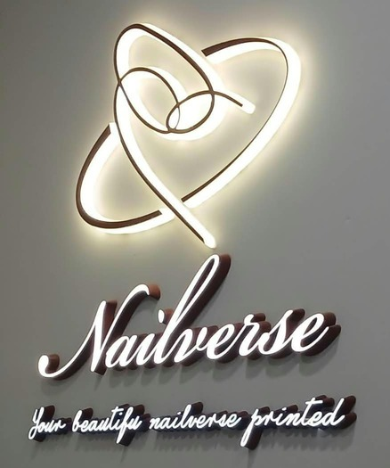
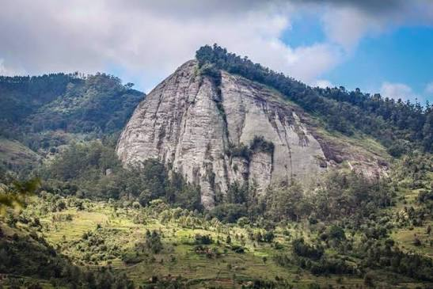

Saturday, November 21, 2026Nairobi Edition • Independent Digital Press
THE DAILY DISPATCH
Clear, concise reporting on technology, science, culture, and travel.
News • Technology & culture (Text & Photo Report)
The Maasai People
By David Kamau • Reporting from Amboseli & Kajiado

Maasai women with Mt. Kilimanjaro in the background
Renowned across southern Kenya and northern Tanzania for their vibrant red shuka cloth, intricate beadwork, and semi-nomadic pastoralist heritage, the Maasai have seamlessly woven modern technology into their traditional way of life rather than letting it replace their culture. Today, mobile phones—often carried in custom-beaded pouches—serve as essential tools on the savanna, allowing herders to check real-time livestock market prices, share weather forecasts, warn neighboring communities of nearby predators, and conduct seamless financial transactions via mobile money platforms like M-Pesa. Meanwhile, off-grid solar panels mounted on traditional manyatta roofs power these devices while providing clean indoor lighting for children to study at night, and younger generations increasingly use smartphones and social media to share Maasai culture globally and build independent businesses.
News • Science & Environment (Audio-Visual Video Dispatch)
Solar Drones Monitor Lake Naivasha Water Quality
By Amina Hassan • Environmental Video Unit
Watch Field Video Dispatch (HD Video + Narration):
Marine biologists and local lakeside cooperatives at Lake Naivasha are deploying solar-charged mapping drones at dawn to spot invasive water hyacinth mats before they block vital fish breeding grounds. Coordinates are sent directly to shore teams, who harvest the plants and convert them into eco-friendly cooking briquettes.
Interview • Beauty and Fashion & Design (Audio Podcast + Text Q&A)
A Conversation With Nail technician Maxwell Odhis
Hosted by Brian Ochieng • Nairobi Studio

Nairobi-based architect Wanjiku Mwangi advocates for passive cooling and compressed earth construction. (Photo: Unsplash / Christina Wocintech)
Nairobi’s beauty and personal care scene has rapidly transformed into a thriving, entrepreneurial powerhouse driven by social media, shifting urban lifestyles, and a surge in homegrown, melanin-focused skincare and cosmetics brands. Alongside this commercial boom, the city is experiencing a notable cultural shift as men increasingly step into spaces long viewed as exclusively female domains—both as sought-after professionals and as active consumers. Across upscale studios in Kilimani and Westlands as well as bustling neighborhood salons, male hairstylists, braiders, nail technicians, and makeup artists are building lucrative, respected careers and challenging outdated occupational gender stereotypes. At the same time, a growing number of Nairobi men are embracing dedicated skincare regimens, beard care, manicures, and holistic spa treatments as routine self-care rather than taboo indulgences, reshaping the capital’s beauty landscape into a more inclusive, creative, and economically dynamic industry.
Rising abruptly from the red plains of Tsavo East, southern Kenya’s Taita Hills offer cool mountain mist, ancient walking trails, and community-led homestays. Accessible via the Madaraka Express train to Voi, the ridge trails wind through indigenous cloud forests home to rare endemic birds and panoramic views toward Mount Kilimanjaro.

View from Vuria Peak overlooking the surrounding valleys and plains. (Photo: Unsplash / Kalen Emsley)
Open-source datasets in Kiswahili, Kikuyu, and Dholuo help ensure equitable access to digital tools. (Photo: Unsplash / Markus Spiske)
“If artificial intelligence only understands a handful of global languages, millions of farmers, students, and clinic workers are left behind.”
Mobile technology has transformed banking and agriculture across East Africa, yet most commercial voice assistants still struggle with African languages. Supporting open-source research collectives that build transparent, locally curated speech and text datasets is essential so healthcare and agricultural tools work in the languages people actually speak every day.